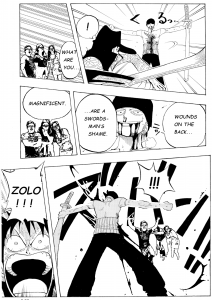
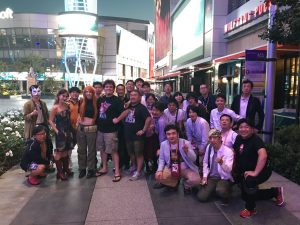
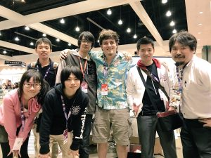

6月28日から、7日4日まで、白井研究室のManga GeneratorチームとReal Baby – Real Familyチームの6人はアメリカ最大のアニメ展示会：Anime Expo 2017(AX2017)へ参加するために、アメリカのロセンゼルスへ向かいました。今回のAX2017での展示「日本キャラVR祭」は集英社が東京近郊のVR会社を招集して、共同で出展した展示です。Manga Generatorの共同展示者は株式会社プログマインド(ProgMind)です。
私達は6月28に羽田空港でProgMindの安藤さんと合流して、6月29日の午前1時の飛行機に乗って、6月28日午後6時ぐらいにロセンゼルス国際空港(LAX)で着きました。そこから、展示会場近くのAirbnbへSuper Shuttleで行きました。今回のAirbnbは中心市街窓から、ロセンゼルスの摩天楼や道を見ることができます。屋上でも綺麗な風景が見えます。
出展の準備は6月29日から、6月30日までです。準備は疲れるし、時間が沢山かかりますが、私は展示会場で働いていた係員と話せて、大きなナルトの気球を膨らませるところを目撃できました。それに私と宥冶は有名なスーパー：Targetへ展示に必要な機械を買いに行きました。
今回は展示中に色々なコスプレイヤーがいました。例えばドラゴンボールのトランクス、人造人間18号、ナルトの暁、ワンピースのルフィなどです。展示会場には、他の展示も沢山ありましたが、私は毎日11時から、7時まで自分のブースで働き、休み時間は1時間だけだったので、他の展示を体験する時間がありませんでした。しかし、Manga Generatorは1日で200回ぐらい体験され、4日間合計で711回も体験されました。体験者からの評価も上々です。ブースで働いていた渡邉翔と安藤歩美もとても嬉しそうです。

{kind=link}
展示の最終日はアメリカの独立記念日でした。その日の夜に屋上で美しい花火を見ました。
私達は最終日の晩御飯をOculusの会社の創始者Palmer Luckey氏と一緒に食べました。Palmer氏は今24歳ですが、彼はもう国際的に有名な会社の社長です。私も頑張ります。


Alright, so it’s been a long time since I have updated this blog. Things have been very very busy and I was left with little time for myself. This update is a long one however, as a lot of stuff has happened in the past month.
{kind=link}
{kind=link}
On June 28th, 2017, me and 4 other Shirai-lab members along with Shirai-sensei and Ando-san, an alumnus of Shirai-lab travelled to the Los Angeles International Airport to attend the Anime Expo 2017. Anime Expo, or AX for short, is the largest Anime exhibition in the entire North America. This time the exhibition, “Japan Character VR Matsuri” is a joint exhibition between Shueisha, the parent company of Shonen JUMP and the Tokyo VR startup companies. Together our group consists of some 20 people from Japan and we occupied a large area in the Anime Expo’s Entertainment Hall. This is the first time for me to attend an Anime convention in America so naturally I was very excited.
Our Airbnb is located in downtown LA some 20 minutes of walk from the Los Angeles Convention Center, the hosting site for AX 2017. The Airbnb is actually a penthouse located on the 20th floor of a building, giving us very good view on a large section of Los Angeles. From my bed which was located right beside the windows I can see neon signs such as U.S. bank on top of the other skyscrapers. To make things better the penthouse has a pool located on the 5th floor and from the top of the penthouse one gets to enjoy beautiful sunset and sunrise.
The setup of the exhibition lasted for two days from June 29th to June 30th. The setup is tedious and long as we have to build an entire exhibition area from scratch but after much hard work the team managed to get it all done. Afterwards I accompanied my two teammates: Sho Watanabe and Ayumi Ando to Target to get some printers and TV sets needed for the exhibition tomorrow.
During the entirety of Anime Expo 2017 me and my teammates pretty much stood in front of our booth, Manga Generator VR JUMP and advertised our interactive comic generator system. This being said I still had a blast mainly because how well received our system was. Throughout the day we had an endless amount of guests just dying to play our game. The waiting line literally never stopped and I actually wished I had some time to catch my breath but that never happened. In fact, I had to ask visitors to stop coming into our booth at the end of each day because we simply can’t accommodate everybody and still pack up on time. As an experienced exhibitor I know that we have broken our previous attendee records and turns out I was right, everyday our game Manga Generator was played almost 200 times when the previous record was a mere 100 times on a good day. Despite of how tiring the whole experience is we all had a tone of fun.
The last day of the exhibition was the American Independence day. That day me and other Tokyo VR startup guys got to eat lunch with Luckey Palmer at a nearby restaurant. We also get to enjoy fireworks on top of our penthouse.
{kind=link}
{kind=link}
{kind=link}
{kind=link}
One thought on “Anime Expo 2017 Los Angeles”
Comments are closed.